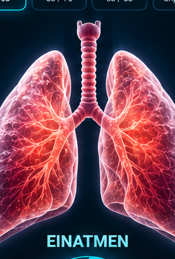

0.0Sekunden
Gesamtzeit00:00Zyklen0Zielzeit10:00
Zeit00:00Atemzüge0PhaseBereit
Aktuelle Werte (Live)
Ø Einatmung–Ø Ausatmung–Frequenz–
✓
Atem-Check abgeschlossen!
Atemfrequenz
Ø Einatemzeit
Ø Ausatemzeit
Verhältnis Ein/Aus
Rhythmus-Stabilität
💡 Tipp
Logbuch
RMV-/Tauchgangsprotokoll bleibt lokal auf deinem Gerät gespeichert.
Fortschritt
Atem-Checks0Ø Frequenz–Trainings0